-
"Some of the images in Princess Mononoke are not just unforgettable, they're almost edible in their vibrantly colored beauty. I haven't taken in animation quite so hungrily since I was a kid watching Disney features for the first time."
— Joe Morgenstern, WALL STREET JOURNAL
"Beautifully constructed and painstakingly written, this is about as close to a perfect animated epic as you're likely to get."
— Melanie McFarland, SEATTLE TIMES
Princesa Mononoke
1997 | 2h14min | +14
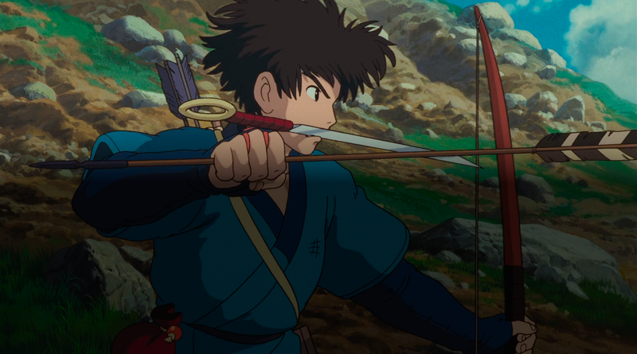
-
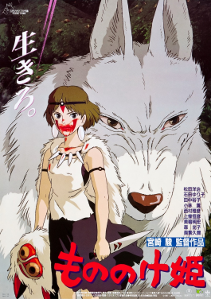
-
Diretor:
Hayao Miyazaki
No século XIV, a harmonia que os humanos, os animais e os deuses desfrutavam começa a desmoronar. O jovem Ashitaka, infectado por uma maldição, busca a cura do deus Shishigami, parecido com um cervo. Em suas viagens, ele vê humanos devastando a terra, provocando a ira do deus lobo Moro e de sua filha humana, a princesa Mononoke. Suas tentativas de mediar a paz entre ela e os humanos só trazem conflito.
-
93%
Assista em:
-
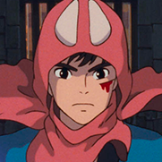
Ashitaka
Peterson Adriano -
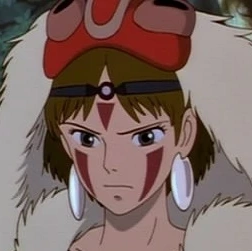
San
Fernanda Crispim -
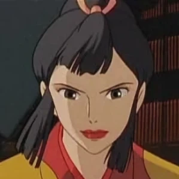
Lady Eboshi
Vera Miranda -
Jigo
Mauro Ramos -
Moro
Nelly Amaral - Ver casting completo
-
Lugar de dublagem: Rio de Janeiro
Título original: もののけ姫 (Mononoke-hime)
-
Estúdio de Dublagem:
Ano de emissão:
1977
2001
Galeria
-
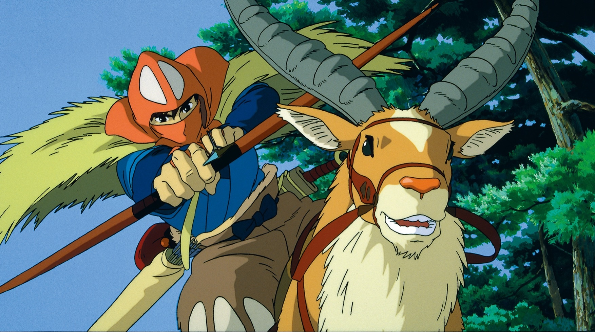
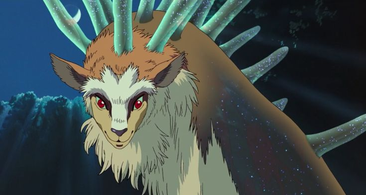
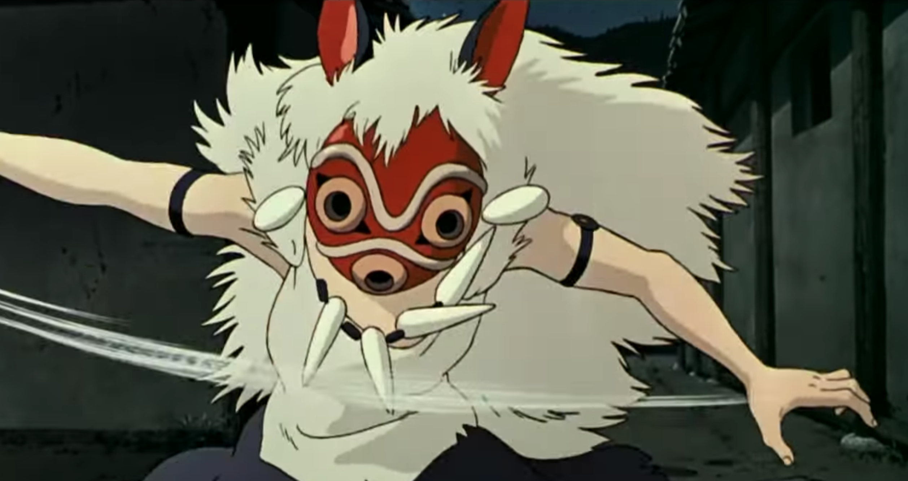
-
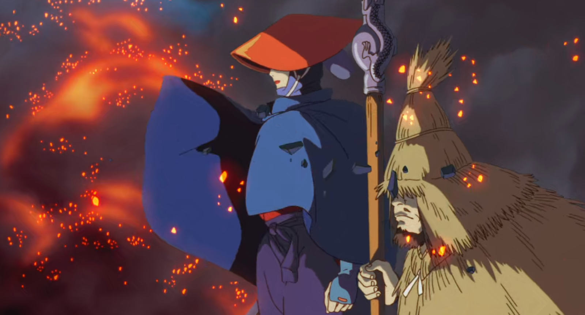
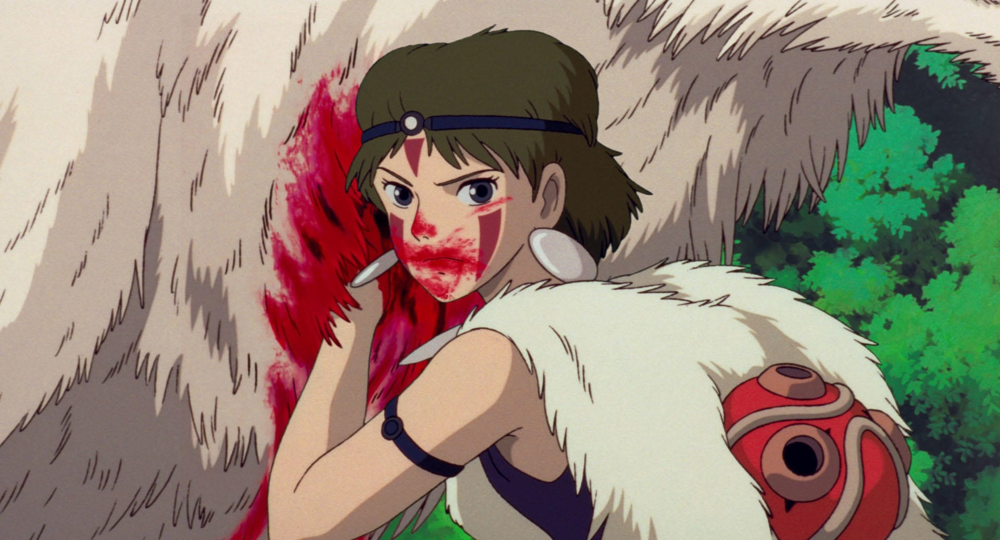
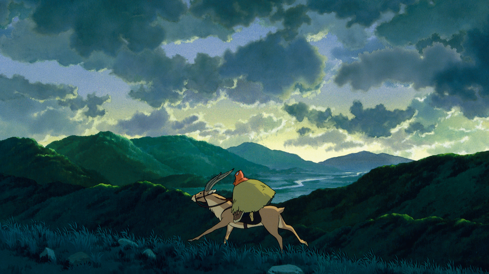
-
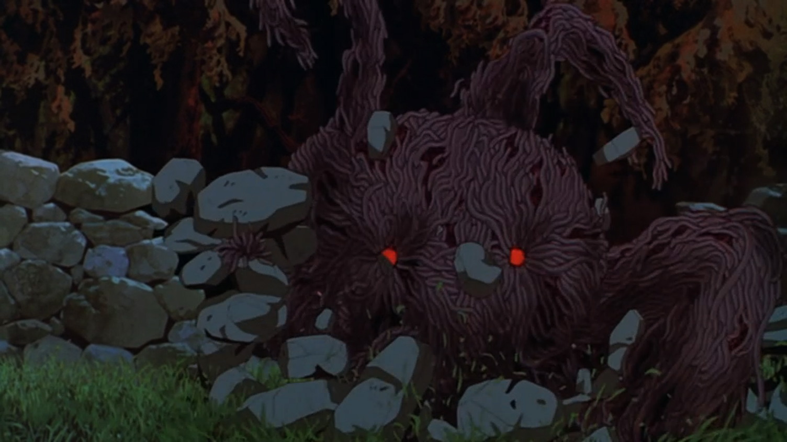
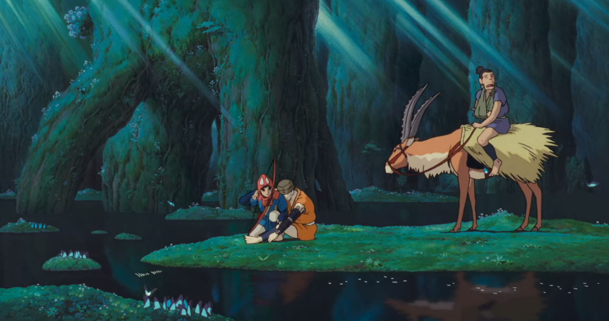
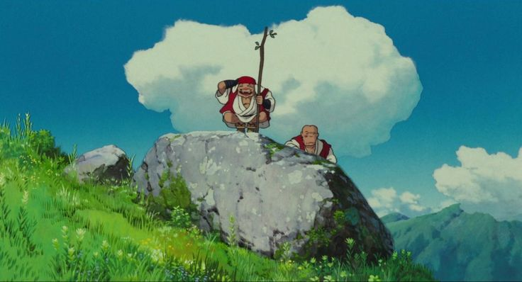
"Life is suffering. It is hard. The world is cursed. Still, you'll find reasons to keep living."
Curiosidades
-
Fato #1Apesar dos vários prêmios, Princesa Mononoke foi considerado um fracasso pelos produtores da Disney. Apesar disso, o chefe da Pixar, John Lasseter, assumiu o lançamento seguinte do filme de Miyazaki nos EUA: A Viagem de Chihiro (2001), filme ganhador do Oscar®.
-
Fato #2O título original do filme em japonês é “Mononoke-hime”, que se traduz como “Princesa Espírito/Monstro”.
-
Fato #3O diretor de arte do filme, Kazuo Oga, passou dois anos criando as intrincadas pinturas de fundo que dão profundidade e realismo ao mundo do filme.
-
Fato #4A estreia do filme no Japão contou com a presença de um número recorde de celebridades e dignitários, incluindo membros da família real.